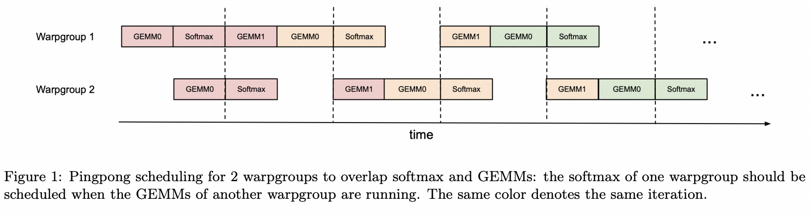
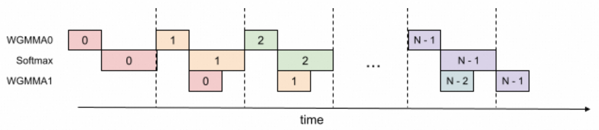

Flash Attention¶
Online Softmax¶
3-Pass Safe Softmax¶
Softmax 的标准定义是 $$ y_i = \frac{\exp(x_i)}{\sum_j \exp(x_j)} $$ 但是当 \(x_i\) 很大时，\(\exp(x_i)\) 会溢出。为了避免这种情况，通常会先计算输入的最大值 \(m = \max_i (x_i)\)，然后使用 $$ y_i = \frac{\exp(x_i - m)}{\sum_j \exp(x_j - m)} $$ 来计算 softmax，确保 \(x_i - m \le 0\)，从而避免溢出。 朴素的实现这种方法需要遍历三次输入：
- 计算最大值 \(m_i = \max(m_{i-1}, x_i)\)。
- 计算归一化因子 \(d_i = d_{i-1} + \exp(x_j - m_N)\)。
- 计算最终的 softmax 输出 \(y_i = \exp(x_i - m_N) / d_N\)。
2-Pass Safe Online Softmax¶
我们可以把前两次遍历融合成一次，在一次遍历中同时更新最大值和归一化因子，实现 2-Pass Safe Softmax：
- 计算最大值和归一化因子
- \(m_i = \max(m_{i-1}, x_i)\)
- \(d_i = d_{i-1} \cdot \exp(m_{i-1} - m_i) + \exp(x_i - m_i)\)
- 计算最终的 softmax 输出 \(y_i = \exp(x_i - m_N) / d_N\)。
把 3-Pass 优化成 2-Pass 有什么收益吗？从计算量上看，2-Pass 甚至还要比 3-Pass 多一些计算。但从全局内存访问的角度来看，2-Pass 只需要遍历两次输入，而 3-Pass 需要遍历三次，减少了一次内存访问。对于 softmax 这种 memory-bound 的操作来说，减少内存访问往往能带来更大的性能提升。
FlashAttention V1¶
1-Pass Attention¶
忽略缩放常数 \(\sqrt{d}\)，标准 Attention 的计算公式是 $$ O = \text{Softmax}(QK^T)V $$ 其中 \(Q, K, V\) 的形状分别是 \((M, D)\)，\((N, D)\)，\((N, D)\)。 那么在 2-Pass Softmax 的基础上，每一行 \(O_i\) 的计算可以分解成以下两步：
- 计算 \(QK^T\) 的最大值和归一化因子
- \(x_j = Q_i K_j^T\)
- \(m_j = \max(m_{j-1}, x_j)\)
- \(d_j = d_j \cdot \exp(m_{j-1} - m_j) + \exp(x_j - m_j)\)
- 计算 \(O\)
- \(O_j = O_{j-1} + \frac{\exp(x_j - m_D)}{d_N} V_j\)
虽然 Softmax 不能被进一步优化成 1-Pass，但是 Attention 只需要得到最终的输出 \(O\)，而不需要中间的 Softmax 结果。实际上 Attention 是可以被优化成 1-Pass 的。 定义 \(O'_j\)
可以得到递推式：
由此，我们可以在一次遍历中同时计算 \(m_j, d_j, O'_j\)，从而实现 1-Pass Attention：
- 计算 \(QK^T\) 的最大值、归一化因子和输出
- \(x_j = Q_i K_j^T\)
- \(m_j = \max(m_{j-1}, x_j)\)
- \(d_j = d_j \cdot \exp(m_{j-1} - m_j) + \exp(x_j - m_j)\)
- \(O'_j = O'_{j-1} \cdot \exp(m_{j-1}-m_j) \cdot \frac{d_{j-1}}{d_j} + \frac{\exp(x_j - m_j)}{d_j} V_j\)
Tiling¶
我们把 K 和 V 分块，每块大小为 \((n, D)\)，再把 Q 每块分为 \((m, D)\)。 我们先分析对于 \(Q_i, K_j, V_j\) 分块的计算过程：
- 计算 \(QK^T\)
- \(X = Q_i K_j^T \in \R^{(m,n)}\)
- 对每行求
- \(\tilde{m_i}[k] = \max_l(X_{k,l}) \in \R^m\)
- \(P_{k,l} = \exp(X_{k,l} - \tilde{m_i}) \in \R^{(m,n)}\)
- \(d_i[k] = \sum_l P_{k,l} \in \R^m\)
- 对每行更新最大值和归一化因子
- \(m_i[k] = \max(m'_i[k], \tilde{m_i}[k])\)
- \(d_i[k] = d'_i[k] \cdot \exp(m'_i[k] - m_i[k]) + d_i[k] \cdot \exp(\tilde{m_i}[k] - m_i[k])\)
- 对每行计算输出
- $O_i[k] = d_i^{-1} ((d'_i \cdot \exp(m'_i - m_i)) \cdot O_i[k] + \exp(\tilde{m_i} - m_i) \cdot PV) $
- 给下个块更新这个块的最大值和归一化因子
- \(m'_i = m\)
- \(d'_i = d\)
FlashAttention V1 把 K 和 V 的分块遍历放在外层循环，把 Q 的分块遍历放在内层循环。
FlashAttention V2¶
-
减少 Cuda Core 计算
在 V1，每个 tile 中 \(O_i\) 的计算都包含两次 rescale 操作：乘 \(d'\) 和除 \(d\)。 V2 在每个 tile 中仅保留乘 \(d'\) 的 rescale，把所有的 \(d\) 的 rescale 一起放在最后。
-
调换循环顺序
V1 先循环 K 和 V，后循环 Q 的做法使得每次内循环都需要反复向 HBM 访存 \(O_i, m'_i, d'_i\)。 V2 调换了内外循环的顺序，先循环 Q，再循环 K 和 V，只在每次外循环中向 HBM 访存 \(O_i, m'_i, d'_i\)。
-
增加 Sequence Length 维度并行
V1 只在 Batch Size 和 Head Num 维度上并行，V2 增加了 Sequence Length 维度的并行
FlashAttention vs SDPA¶
FlashAttention 是否一定比标准的 SDPA 快？答案是否定的。 FlashAttention 希望通过减少全局内存访问来提升性能，FA1 论文中其实给出了 FlashAttention 和 SDPA 访存量的渐进分析：
| Method | Memory Access |
|---|---|
| SDPA | \(\Theta(Nd + N^2)\) |
| FlashAttention | \(\Theta(N^2 d^2 M^{-1})\) |
其中 \(N\) 是 seq_len，\(d\) 是 head_dim，\(M\) 是 GPU 的 SRAM 大小。
对于主流的模型和推理框架，seq_len 一般在几千以内（8192），head_dim 是 64/128，GPU 的 SRAM 大概是 200kB（A100: 192kB, H100: 228kB）。
这时 \(d^2 M^{-1}\) 是远小于 1 的，所以 FlashAttention 的访存量要远小于 SDPA。
但是如果 head_dim 比较大，比如 256 或 512，或者 SRAM 比较小，比如在旧架构的 GPU 上运行，FlashAttention 的访存量可能会大于 SDPA。
FlashAttention V3¶
Warp-specialized Pingpong Scheduling¶
在 Mainloop 的每次迭代中，通过 bar.sync，让 Warpgroup 1 的 GEMMs (当前 tile 的 GEMM1 和 下个 tile 的 GEMM0) 在 Warpgroup 2 的 GEMMs 之前发射。
使得两个 warpgroup 的 GEMM 和 softmax 互相重叠。

收益：570 TFLOPS -> 620-640 TFLOPS
Intra-warpgroup Overlapping¶
在一个 warpgroup 内，当前 tile 的 GEMM1 可以和下个 tile 的 softmax 重叠，这需要下个 tile 的 GEMM0 先于当前 tile 的 GEMM1 发射并等待完成。 这其实相当于 2-stage 的流水线，需要额外的寄存器资源。

收益：661 TFLOPS
FA3 in CuTeDSL¶
Two Warpgroups Tiling¶
两个 consumer warp group 处理同一个 K/V tile，沿 M 维度各负责一半的 Q 行。它们不处理不同的 n-block。
tile_m = 128, tile_n = 128
┌─────────────────────────┐
│ WG0: Q[0:64, :] │ ← M 维度上半部分
│ ╳ K[0:128, :] │ 计算 S[0:64, 0:128]
│ ╳ V[0:128, :] │ 累加 O[0:64, :]
├─────────────────────────┤
│ WG1: Q[64:128, :] │ ← M 维度下半部分
│ ╳ K[0:128, :] │ 计算 S[64:128, 0:128]
│ ╳ V[0:128, :] │ 累加 O[64:128, :]
└─────────────────────────┘
在 _get_tiled_mma() 中：
tiled_mma_qk = sm90_utils_basic.make_trivial_tiled_mma(
...,
atom_layout_mnk=(self.tile_m // 64, 1, 1), # tile_m=128 → (2, 1, 1)
tiler_mn=(64, self.tile_n), # 每个 atom = 64×128
)
- atom_layout_mnk=(2, 1, 1) 表示在 M 方向上排列了 2 个 WGMMA atom
- 每个 WGMMA atom = 一个 warp group（128 threads），负责 64×128（M×N） 的 MMA
- num_wg_mma = 128//64 = 2
在 mma() 函数中：
warp_group_idx = cute.arch.make_warp_uniform(tidx // 128)
# Consumer WG0: warp_group_idx = 1 (原始 tidx 128-255)
# Consumer WG1: warp_group_idx = 2 (原始 tidx 256-383)
# 每个 warp group 获取 MMA tile 的不同 M 区域：
wg_mma_qk = tiled_mma_qk.get_slice(warp_group_thread_layout(warp_group_idx))
# WG0 → M[0:64], WG1 → M[64:128]
# Q 和 K 的 fragment 分区：
_, tSrQ, tSrK = sm90_utils.partition_fragment_ABC(
wg_mma_qk, (self.tile_m, self.tile_n, self.tile_hdim), sQ, sK
)
# WG0: tSrQ 覆盖 sQ[0:64, :], tSrK 覆盖 sK[:, :] (共享)
# WG1: tSrQ 覆盖 sQ[64:128, :], tSrK 覆盖 sK[:, :] (共享)
两个 WG 从 同一块 shared memory 中读取 K 和 V，但读取 Q 的 不同行区域。
两个 WG 之间的同步协议¶
由于两个 WG 共享 sK 和 sV，必须通过 barrier 协调：不能一个 WG 还在读 K 而另一个已经释放了 pipeline。
同步使用 NamedBarrierFwd 中的两个 barrier：
┌──────────────────┬────┬─────────────────────┐ │ Barrier │ 值 │ 用途 │ ├──────────────────┼────┼─────────────────────┤ │ WarpSchedulerWG1 │ 2 │ WG0 等待 + WG1 到达 │ ├──────────────────┼────┼─────────────────────┤ │ WarpSchedulerWG2 │ 3 │ WG1 等待 + WG0 到达 │ └──────────────────┴────┴─────────────────────┘
- warp_scheduler_barrier_sync() — 等待对方 WG 到达我的 barrier
# WG0: 在 barrier 2 (WarpSchedulerWG1) 上等待
# WG1: 在 barrier 3 (WarpSchedulerWG2) 上等待
barrier_id = int(WarpSchedulerWG1) - 1 + canonical_warp_group_idx()
# = 2 - 1 + 1 = 2 (WG0) or 2 - 1 + 2 = 3 (WG1)
- warp_scheduler_barrier_arrive() — 向对方 WG 的 barrier 到达
cur_wg = canonical_warp_group_idx() - 1 # WG0→0, WG1→1
next_wg = 1 - cur_wg # WG0→1, WG1→0
barrier_id = int(WarpSchedulerWG1) + next_wg
# WG0 到达 barrier 3 (WarpSchedulerWG2) → 唤醒 WG1
# WG1 到达 barrier 2 (WarpSchedulerWG1) → 唤醒 WG0
- mma_init() — 初始到达
WG0 先对 barrier 2 做了 128 threads 的 pre-arrive。
握手协议示意图：
WG0 WG1
│ │
mma_init: arrive(barrier 2) │
│ │
┌────▼ sync(barrier 2) ◄──────── arrive(barrier 2) ────┐
│ │ (阻塞直到 WG1 到达) │
│ │ │ │
│ ├── QK GEMM ───────────────► ├── QK GEMM │
│ │ (各自 64×128) │ (各自 64×128) │
│ │ │ │
│ ├── arrive(barrier 3) ────────► sync(barrier 3) ───┘
│ │ (通知 WG1) (阻塞直到 WG0 到达)
│ │ │
│ ├── wait_group(0) ├── wait_group(0)
│ │ (等 QK 完) (等 QK 完)
│ │ │
│ ├── release K ───────────────────├── release K (两个都安全)
│ │ │
│ ├── softmax + convert P ─────────├── softmax + convert P
│ │ │
│ ├── PV GEMM ────────────────────►├── PV GEMM
│ │ │
│ ├── release V ───────────────────├── release V (两个都安全)
│ │ │
└────┴── 下一轮循环 ───────────────────┴──
关键保证：两个 WG 都完成 QK GEMM 之后，才会 release K；两个 WG 都完成 PV GEMM 之后，才会 release V。
Producer 如何配合两个 Consumer¶
Producer 不需要区分两个 consumer warp group。
Producer 只负责把 K/V tile 加载到 shared memory，两个 consumer WG 从同一块 shared memory 中并发读取。Pipeline 的 acquire/commit/release 对 producer 是透明的：
# Producer 加载流程 (intra_wg_overlap 模式)
# 步1: K[n-1], Q, V[n-1]
pipeline_k.producer_acquire(state)
load_K(block=n-1, producer_state=state)
load_Q(...)
pipeline_v.producer_acquire(state)
load_V(block=n-1, producer_state=state)
state.advance()
# 步2+ (循环): K[i-1] 与 V[i] 交错加载 (实现 overlap)
for n in range(...):
state_prev = state.clone()
state.advance()
pipeline_k.producer_acquire(state)
load_K(block=n, producer_state=state) # 新 K tile
pipeline_v.producer_acquire(state_prev)
load_V(block=n+1, producer_state=state_prev) # 旧 V tile (上一次的 K 对应的 V)
# 步N: 收尾的 V
pipeline_v.producer_acquire(state)
load_V(block=n_min, producer_state=state)
state.advance()
Producer 和 Consumer 之间通过 mbarrier-based pipeline（TMA 时）或 cp.async pipeline 通信：
# Pipeline 创建时指定 consumer 为所有 MMA warp groups
mma_warps = ThreadCooperativeGroup(self.num_mma_threads // 32) # 256 threads = 8 warps
pipeline_k = PipelineTmaAsync.create(
...,
consumer_group=mma_warps, # 两个 consumer WG 共享同一个 pipeline
)
pipeline_v = PipelineTmaAsync.create(
...,
consumer_group=mma_warps,
)
Consumer 端所有 WG 通过同一个 pipeline state 进行 consumer_wait/consumer_release，但只有 WG0（warp_group_idx == 1）做实际的状态推进（如 kv_consumer_state.advance()）。
intra_wg_overlap 模式下的流水线 overlap¶
当 intra_wg_overlap=True（默认），consumer 端将 QK GEMM 和 PV GEMM 重叠：
时间 ──────────────────────────────────────────►
WG0: [QK GEMM(i) | softmax(i-1) ] [PV GEMM(i-1) | QK GEMM(i+1) | ...]
WG1: [QK GEMM(i) | softmax(i-1) ] [PV GEMM(i-1) | QK GEMM(i+1) | ...]
▲
warp_scheduler_barrier 同步点
在 mma_one_n_block_intrawg_overlap 中： 1. sync → 两个 WG 对齐 2. QK GEMM 发起（wg_wait=-1，不等待） 3. 在 QK GEMM 飞行期间，做 rescale_O（用上一轮 softmax 的 row_scale） 4. 等待 V pipeline，发起 PV GEMM（wg_wait=-1） 5. arrive → 通知对方 WG 6. warpgroup.wait_group(1) → 等待 QK 完成（PV 还在飞） 7. release K → 做 softmax（此时 PV 还在飞） 8. warpgroup.wait_group(0) → 等待 PV 完成 9. release V
这样就实现了 QK GEMM + softmax 与 PV GEMM 的流水线重叠。
FlashAttention V4¶
TODO
flash-attn Python Package¶
Flash Attention 仓库包含两套独立安装的 Python 包。
flash-attn 是使用 C++/CUDA 实现的 FA2，kernel 是预编译的。
函数入口在 from flash_attn import flash_attn_func。
flash-attn-4 使用了 Python CuTeDSL，支持 SM80/90/100/120，运行时 JIT 编译 kernel。
函数入口在 from flash_attn.cute import flash_attn_func。